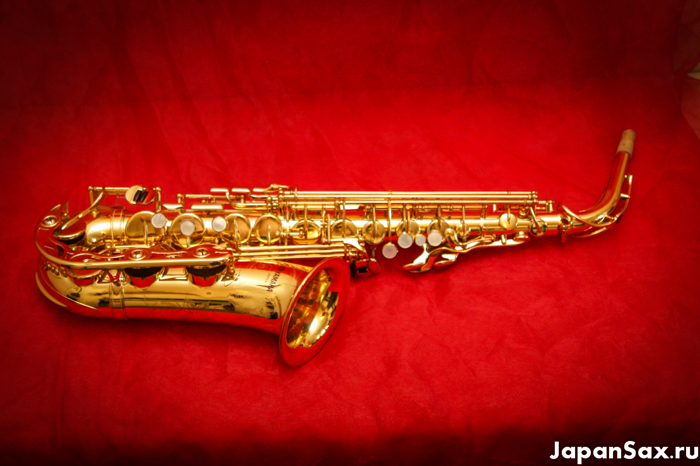

Yamaha YAS-62 Альт-саксофон
Описание товара
Альт саксофон Yamaha YAS-62, пожалуй, самый известный саксофон фабрики Yamaha. Он хорошо знаком саксофонистам во всем мире.
Характеристики товара
- Инструмент обладает красивым, сочным тембром
- Cтроит и кроет полностью
- В комплекте жесткий футляр, гайтан, мундштук Selmer S90 с колпачком и лигатурой
Подробное описание товара
Профессиональная модель, выпускаемая в Японии и по сей день. Сейчас приводится уже третье поколение этого инструмента, сохраняющее традиционное японское качество и узнаваемый тембр. Однако, среди саксофонистов бытует устойчивое мнение, что модель YAS-62 ранних выпусков, превосходит по звучанию современные. Это связанно с материалами изготавливания саксофона. Ниже, на фотографиях, представлен альт YAS-62 ранних выпусков (80-е г. ) с бордовым лого и сплошной защитой нижних клапанов
